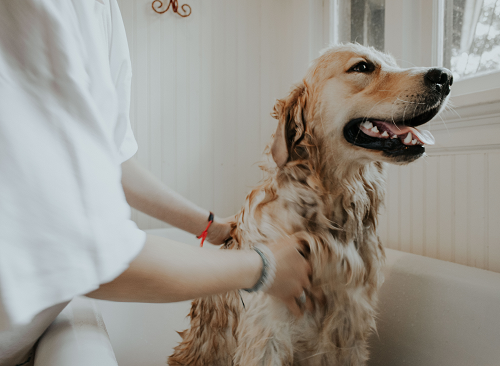

Sobre nosotros
Servicios médicos
Hotel
Citas
Registrarse
Iniciar sesión
Nuestras citas incluyen
* Cirugías
*
Vacunación
*
Consulta general
*
Corte de pelo y baño
*
Citas de control y seguimiento
!!
El corte de pelo y baño incluye: Corte de uñas, limpieza de oídos y drenaje de las glándulas perianales
!!

Nuestros precios
Chequeo general:
El precio de la consulta general ronda los ₡20.000
Pelibaño:
El corte de pelo y baño ronda los ₡14.000
Vacunas:
Los precios van desde los ₡3.500 a los ₡22.600
!!
Aplican restricciones, precios sujetos a cambios
!!
Clínica veterinaria Moka @2022
Facebook
/
Twitter
/
Correo
Diseñado por Innovatech